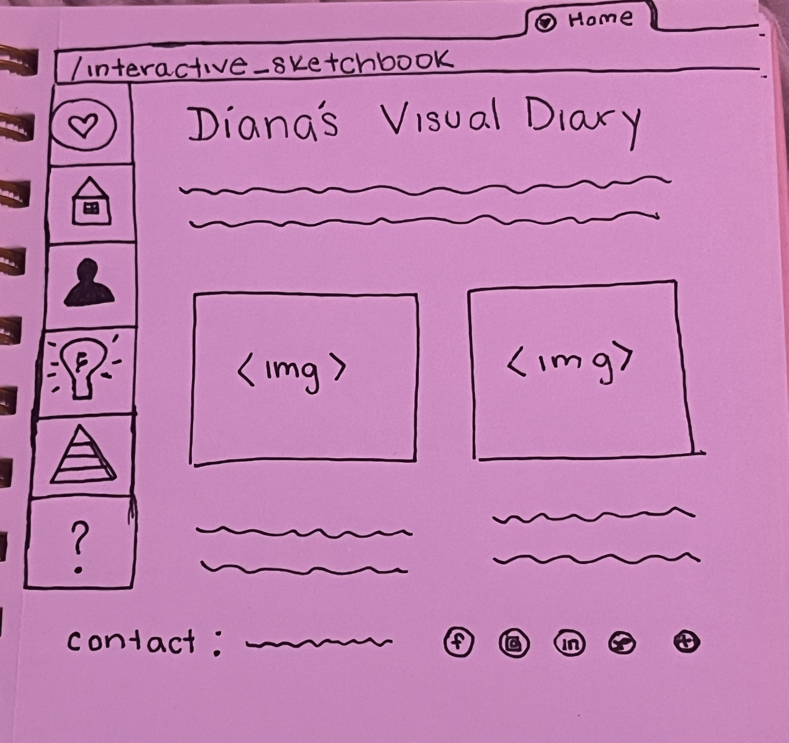

Reflection: In reading, The Difference Between Information Architecture (IA) and Navigation I realized how vital it is to clearly set up the information we want to be displayed and how we should then transform that into an even easier navigation structure. As a result, I sketched and intend to apply components such as local navigation using distinct logos or images as well as include an apparent global navigation site at the very top so users can’t miss it, along with a footer to contain contact and concluding information. While I was in the process of linking all of my pages together I learned that I must include a target”=_blank” element to each of my webpages in order for them to open in new tabs and not only apply it to my index file. Looking back, this step feels extremely obvious but It reminded me that I am dealing with separate files and simply combining them to interact and communicate with each other and they certainly can't do that unless I have applied this element to each and every reference link. As for the current structure, I have a long way to go, however, I specifically want to achieve a vertical navigation bar and successfully implement logos onto those links.